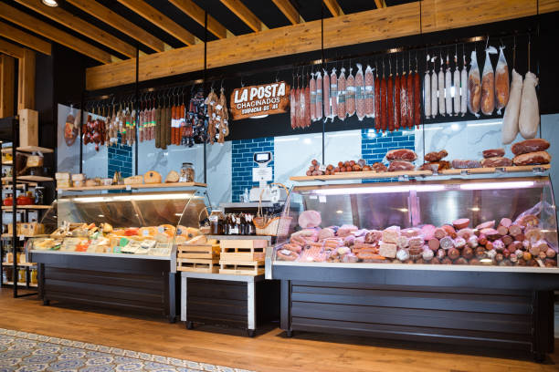
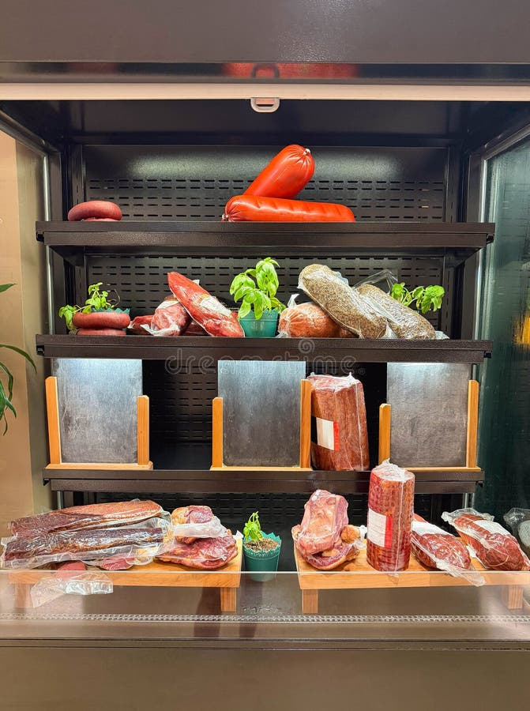

01
Wagyu Beef
Вагю үхрийн мах
Japanese A5 from Kashiwabara Farm and Mongolian Wagyu with deep fat marbling. Rich, buttery, and best cooked simply.

Japanese A5 Wagyu, Mongolian Wagyu, dry-aged steaks, house-made sausages and sauces — cut fresh, weighed honestly, and served by people who know their meat.
BB Butcher Shop opened in Ulaanbaatar with a conviction that was, at the time, unusual: that a city deserves a proper butcher — not a supermarket counter, but a shop where the person handing you your meat can tell you which farm it came from, how long it was aged, and exactly how to cook it.
We were the first butcher shop in Mongolia to handle Japanese A5 Wagyu, importing "Kashiwabara Wagyu" directly from Kashiwabara Farm. Alongside it we carry Mongolian Wagyu with deep fat marbling, dry-aged steaks, and a full range of pork, lamb, chicken and beef — plus sausages and sauces made in-house.
Everything is cut to order. Nothing sits. If you need a specific cut for a specific dinner, call a day ahead and we will have it ready.
River Garden Village, 401
Khan-Uul District, Ulaanbaatar
Japanese & Mongolian Wagyu
Dry-aged beef
Imported goods & pantry items
from the US and Japan

Six categories, one standard. Every item is trimmed, weighed and wrapped in front of you.
Japanese A5 from Kashiwabara Farm and Mongolian Wagyu with deep fat marbling. Rich, buttery, and best cooked simply.

Ribeye, striploin, tenderloin and tomahawk — aged for depth of flavour and a crust that only a hot pan can give.

Everyday cuts done properly: brisket, short rib, chuck, mince ground fresh on request, and bones for stock.

Made in-house in small batches. Chicken sausages are a family favourite; the beef and pork links hold up on any grill.
Mongolian lamb, sourced locally. Chops, racks, shoulder and leg — the meat this country does better than anyone.
Belly, loin, ribs and whole birds. Plus marinated skewers ready for the grill — five minutes and dinner is done.
BB Butcher Shop was the first butcher in Mongolia to handle Japanese A5 Wagyu. Ours comes from Kashiwabara Farm — delivered directly, never through a middleman.
A5 is the highest grade Japan awards: the finest intramuscular fat, a melt point below body temperature, and a flavour that needs nothing but salt and a hot surface.
House-made sauces and a rotating selection of imported goods — the things that make a good cut into a great meal.
Our signature house sauce. Deep, savoury, and made for steak. 9,900₮.
A rotating range of homemade sauces, blended in-shop to pair with beef, lamb and chicken.
Air-freighted arrivals from the US and Japan — snacks, drinks and pantry staples you won't find elsewhere.
Ready-to-grill shashlik, marinated in-house. Five minutes in the oven or on the fire.
This is the first butcher shop in Mongolia to handle Japanese A5 Wagyu beef. Here you can enjoy "Kashiwabara Wagyu" delivered directly from Kashiwabara Farm.
I've visited a couple of times and find the meat to be great. Sausages are very tasty — my daughter loves the chicken sausages.
Best meat I have tried in Mongolia. The steaks are amazing, the sausages and chicken are amazing. They also import a bunch of stuff from the US.
River Garden Village, building 401 — just west of the Marshals Bridge, Khan-Uul District.
River Garden Village, 401
HUD — 17th khoroo, Khan-Uul District
Ulaanbaatar 00000, Mongolia
River Garden Village, 401 · Ulaanbaatar
Get Directions →Call a day ahead for Wagyu, a specific cut, or a large order. We'll have it trimmed, weighed and waiting.
Call +976 8040 8040